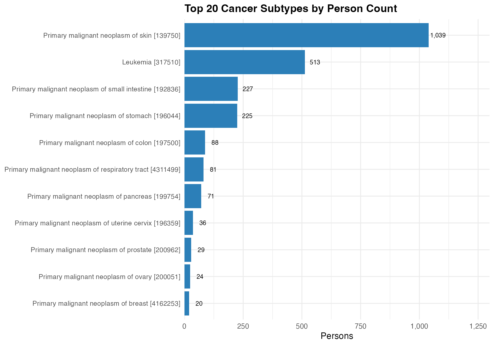
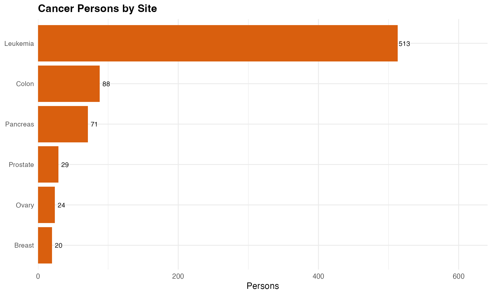
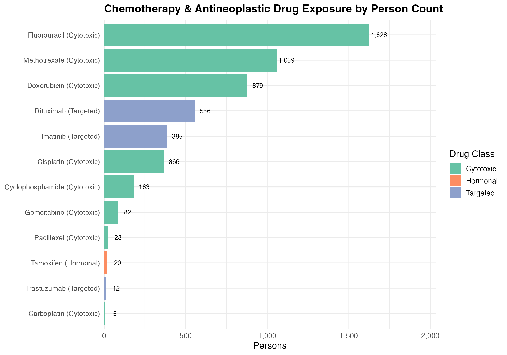
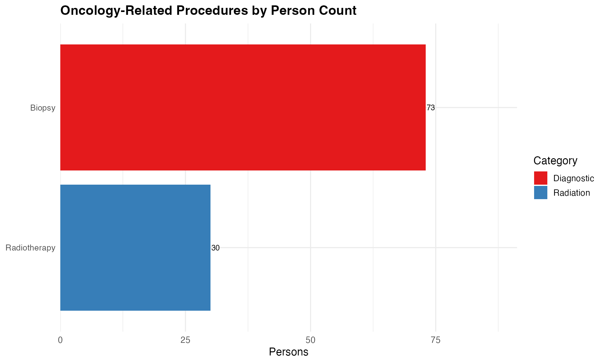
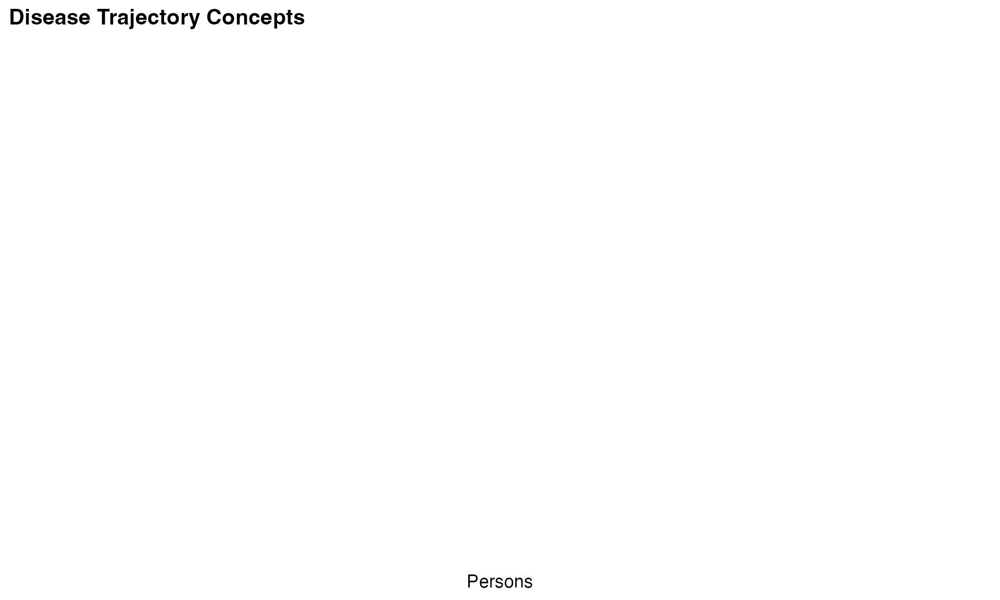

This diagnostic evaluates a CDM dataset for suitability in oncology research. We examine the presence and depth of cancer-related data across four clinical domains: conditions, drugs, procedures, and measurements. The report also looks for evidence of cancer staging, disease progression, and tumor markers – data elements critical for most oncology study designs.
All concept IDs are hardcoded OMOP standard concepts verified against the OMOP Standardized Vocabulary.
Connect to the CDM database and load required libraries.
library(DBI)
library(dplyr, warn.conflicts = FALSE)
library(ggplot2)
library(CDMConnector)
con <- dbConnect(duckdb::duckdb(), eunomiaDir("delphi-100k"))
cdm <- cdmFromCon(con, cdmSchema = "main", writeSchema = "main", achillesSchema = "main")We start by counting how many persons and condition records are
associated with any malignant neoplasm. The parent concept
443392 (Malignant neoplastic disease) captures
all cancers via the SNOMED hierarchy and
concept_ancestor.
# 443392 = Malignant neoplastic disease (SNOMED 363346000)
cancer_descendants <- cdm$concept_ancestor %>%
filter(ancestor_concept_id == 443392L) %>%
select(descendant_concept_id)
cancer_conditions <- cdm$condition_occurrence %>%
inner_join(cancer_descendants,
by = c("condition_concept_id" = "descendant_concept_id"))
cancer_summary <- cancer_conditions %>%
summarise(
cancer_persons = n_distinct(person_id),
cancer_records = n()
) %>%
collect()
total_persons <- cdm$person %>% tally() %>% pull(n)
cancer_summary <- cancer_summary %>%
mutate(
total_persons = total_persons,
prevalence_pct = round(cancer_persons / total_persons * 100, 2)
)
cancer_summary %>%
transmute(
`Total Persons in CDM` = fmt(total_persons),
`Persons with Cancer` = fmt(cancer_persons),
`Cancer Prevalence (%)` = prevalence_pct,
`Cancer Condition Records`= fmt(cancer_records)
) %>%
knitr::kable(align = "r")| Total Persons in CDM | Persons with Cancer | Cancer Prevalence (%) | Cancer Condition Records |
|---|---|---|---|
| 99,523 | 2,325 | 2.34 | 2,353 |
The table below identifies the most common cancer subtypes by person count. We query condition_occurrence against concept_ancestor descendants of the malignant neoplasm hierarchy and resolve concept names.
cancer_by_type <- cancer_conditions %>%
group_by(condition_concept_id) %>%
summarise(
persons = n_distinct(person_id),
records = n(),
.groups = "drop"
) %>%
arrange(desc(persons)) %>%
head(20) %>%
left_join(
cdm$concept %>% select(concept_id, concept_name),
by = c("condition_concept_id" = "concept_id")
) %>%
collect()
cancer_by_type %>%
mutate(label = paste0(concept_name, " [", condition_concept_id, "]")) %>%
mutate(label = reorder(label, persons)) %>%
ggplot(aes(x = persons, y = label)) +
geom_col(fill = "#2c7fb8") +
geom_text(aes(label = fmt(persons)), hjust = -0.1, size = 3.2) +
scale_x_continuous(expand = expansion(mult = c(0, 0.25)),
labels = scales::comma) +
labs(
title = "Top 20 Cancer Subtypes by Person Count",
x = "Persons", y = NULL
)
We also check against a curated list of common cancer sites to ensure the hierarchy-based counts are plausible. These are the top-level SNOMED concepts for each major cancer type.
cancer_sites <- tribble(
~concept_id, ~cancer_site,
4112853L, "Breast",
443388L, "Lung",
4180790L, "Colon",
4163261L, "Prostate",
141232L, "Melanoma (skin)",
4181351L, "Ovary",
197508L, "Bladder",
4180793L, "Pancreas",
432571L, "Lymphoma",
317510L, "Leukemia"
)
site_counts <- cancer_sites %>%
rowwise() %>%
mutate(
descendants = list(
cdm$concept_ancestor %>%
filter(ancestor_concept_id == concept_id) %>%
pull(descendant_concept_id)
)
) %>%
ungroup() %>%
mutate(
stats = purrr::map2(concept_id, descendants, function(cid, descs) {
ids <- unique(c(cid, descs))
cdm$condition_occurrence %>%
filter(condition_concept_id %in% ids) %>%
summarise(persons = n_distinct(person_id), records = n()) %>%
collect()
})
) %>%
tidyr::unnest(stats) %>%
select(cancer_site, concept_id, persons, records) %>%
arrange(desc(persons))
site_counts %>%
mutate(across(c(persons, records), fmt)) %>%
knitr::kable(
col.names = c("Cancer Site", "Ancestor Concept ID", "Persons", "Records"),
align = c("l", "r", "r", "r")
)| Cancer Site | Ancestor Concept ID | Persons | Records |
|---|---|---|---|
| Leukemia | 317510 | 513 | 513 |
| Colon | 4180790 | 88 | 88 |
| Pancreas | 4180793 | 71 | 71 |
| Prostate | 4163261 | 29 | 29 |
| Ovary | 4181351 | 24 | 24 |
| Breast | 4112853 | 20 | 20 |
| Lung | 443388 | 0 | 0 |
| Melanoma (skin) | 141232 | 0 | 0 |
| Bladder | 197508 | 0 | 0 |
| Lymphoma | 432571 | 0 | 0 |
site_counts %>%
filter(persons > 0) %>%
mutate(cancer_site = reorder(cancer_site, persons)) %>%
ggplot(aes(x = persons, y = cancer_site)) +
geom_col(fill = "#d95f0e") +
geom_text(aes(label = fmt(persons)), hjust = -0.1, size = 3.5) +
scale_x_continuous(expand = expansion(mult = c(0, 0.25)),
labels = scales::comma) +
labs(
title = "Cancer Persons by Site",
x = "Persons", y = NULL
)
This section examines drug exposures for common chemotherapy agents.
We check both traditional cytotoxic drugs and newer
targeted/immunotherapy agents. All concept IDs below are RxNorm
Ingredient-level standard concepts; we use
concept_ancestor to capture all formulations and
strengths.
chemo_drugs <- tribble(
~concept_id, ~drug_name, ~drug_class,
1310317L, "Cyclophosphamide", "Cytotoxic",
1338512L, "Doxorubicin", "Cytotoxic",
955632L, "Fluorouracil", "Cytotoxic",
1397599L, "Cisplatin", "Cytotoxic",
1344905L, "Carboplatin", "Cytotoxic",
1378382L, "Paclitaxel", "Cytotoxic",
1315942L, "Docetaxel", "Cytotoxic",
1314924L, "Gemcitabine", "Cytotoxic",
1305058L, "Methotrexate", "Cytotoxic",
45775965L, "Pembrolizumab", "Immunotherapy",
45892628L, "Nivolumab", "Immunotherapy",
1387104L, "Trastuzumab", "Targeted",
1397141L, "Bevacizumab", "Targeted",
1304107L, "Imatinib", "Targeted",
1314273L, "Rituximab", "Targeted",
1436678L, "Tamoxifen", "Hormonal",
1315946L, "Letrozole", "Hormonal"
)
drug_counts <- chemo_drugs %>%
rowwise() %>%
mutate(
stats = list({
descs <- cdm$concept_ancestor %>%
filter(ancestor_concept_id == concept_id) %>%
pull(descendant_concept_id)
ids <- unique(c(concept_id, descs))
cdm$drug_exposure %>%
filter(drug_concept_id %in% ids) %>%
summarise(persons = n_distinct(person_id), records = n()) %>%
collect()
})
) %>%
ungroup() %>%
tidyr::unnest(stats) %>%
select(drug_name, drug_class, concept_id, persons, records) %>%
arrange(desc(persons))
drug_counts %>%
mutate(across(c(persons, records), fmt)) %>%
knitr::kable(
col.names = c("Drug", "Class", "Concept ID", "Persons", "Records"),
align = c("l", "l", "r", "r", "r")
)| Drug | Class | Concept ID | Persons | Records |
|---|---|---|---|---|
| Fluorouracil | Cytotoxic | 955632 | 1,626 | 10,645 |
| Methotrexate | Cytotoxic | 1305058 | 1,059 | 3,427 |
| Doxorubicin | Cytotoxic | 1338512 | 879 | 1,980 |
| Rituximab | Targeted | 1314273 | 556 | 993 |
| Imatinib | Targeted | 1304107 | 385 | 1,134 |
| Cisplatin | Cytotoxic | 1397599 | 366 | 2,409 |
| Cyclophosphamide | Cytotoxic | 1310317 | 183 | 364 |
| Gemcitabine | Cytotoxic | 1314924 | 82 | 427 |
| Paclitaxel | Cytotoxic | 1378382 | 23 | 49 |
| Tamoxifen | Hormonal | 1436678 | 20 | 76 |
| Trastuzumab | Targeted | 1387104 | 12 | 18 |
| Carboplatin | Cytotoxic | 1344905 | 5 | 10 |
| Docetaxel | Cytotoxic | 1315942 | 0 | 0 |
| Pembrolizumab | Immunotherapy | 45775965 | 0 | 0 |
| Nivolumab | Immunotherapy | 45892628 | 0 | 0 |
| Bevacizumab | Targeted | 1397141 | 0 | 0 |
| Letrozole | Hormonal | 1315946 | 0 | 0 |
drug_counts %>%
filter(persons > 0) %>%
mutate(drug_label = paste0(drug_name, " (", drug_class, ")")) %>%
mutate(drug_label = reorder(drug_label, persons)) %>%
ggplot(aes(x = persons, y = drug_label, fill = drug_class)) +
geom_col() +
geom_text(aes(label = fmt(persons)), hjust = -0.1, size = 3.2) +
scale_fill_brewer(palette = "Set2", name = "Drug Class") +
scale_x_continuous(expand = expansion(mult = c(0, 0.25)),
labels = scales::comma) +
labs(
title = "Chemotherapy & Antineoplastic Drug Exposure by Person Count",
x = "Persons", y = NULL
)
drug_counts %>%
group_by(drug_class) %>%
summarise(
agents = n(),
agents_with_data = sum(persons > 0),
total_persons = sum(persons),
total_records = sum(records),
.groups = "drop"
) %>%
arrange(desc(total_persons)) %>%
mutate(across(c(total_persons, total_records), fmt)) %>%
knitr::kable(
col.names = c("Drug Class", "Agents Checked", "Agents with Data",
"Total Persons", "Total Records"),
align = c("l", "r", "r", "r", "r")
)| Drug Class | Agents Checked | Agents with Data | Total Persons | Total Records |
|---|---|---|---|---|
| Cytotoxic | 9 | 8 | 4,223 | 19,311 |
| Targeted | 4 | 3 | 953 | 2,145 |
| Hormonal | 2 | 1 | 20 | 76 |
| Immunotherapy | 2 | 0 | 0 | 0 |
Beyond drug exposures, oncology data often records chemotherapy administration as procedures. We search for a broad set of procedure concepts related to chemotherapy delivery, radiation therapy, and oncologic surgery.
onc_procedures <- tribble(
~concept_id, ~procedure_name, ~category,
4273629L, "Chemotherapy", "Chemotherapy",
4163713L, "Chemotherapy cycle", "Chemotherapy",
4141762L, "Oral chemotherapy", "Chemotherapy",
44790238L, "Chemotherapy delivery", "Chemotherapy",
1242725L, "Radiotherapy", "Radiation",
4223087L, "Radiation therapy mgmt", "Radiation",
4311405L, "Biopsy", "Diagnostic",
4146053L, "Manual pelvic examination", "Diagnostic",
4306780L, "Gynecologic examination", "Diagnostic"
)
proc_counts <- onc_procedures %>%
rowwise() %>%
mutate(
stats = list({
descs <- cdm$concept_ancestor %>%
filter(ancestor_concept_id == concept_id) %>%
pull(descendant_concept_id)
ids <- unique(c(concept_id, descs))
cdm$procedure_occurrence %>%
filter(procedure_concept_id %in% ids) %>%
summarise(persons = n_distinct(person_id), records = n()) %>%
collect()
})
) %>%
ungroup() %>%
tidyr::unnest(stats) %>%
select(procedure_name, category, concept_id, persons, records) %>%
arrange(desc(persons))
proc_counts %>%
mutate(across(c(persons, records), fmt)) %>%
knitr::kable(
col.names = c("Procedure", "Category", "Concept ID", "Persons", "Records"),
align = c("l", "l", "r", "r", "r")
)| Procedure | Category | Concept ID | Persons | Records |
|---|---|---|---|---|
| Biopsy | Diagnostic | 4311405 | 73 | 202 |
| Radiotherapy | Radiation | 1242725 | 30 | 82 |
| Chemotherapy | Chemotherapy | 4273629 | 0 | 0 |
| Chemotherapy cycle | Chemotherapy | 4163713 | 0 | 0 |
| Oral chemotherapy | Chemotherapy | 4141762 | 0 | 0 |
| Chemotherapy delivery | Chemotherapy | 44790238 | 0 | 0 |
| Radiation therapy mgmt | Radiation | 4223087 | 0 | 0 |
| Manual pelvic examination | Diagnostic | 4146053 | 0 | 0 |
| Gynecologic examination | Diagnostic | 4306780 | 0 | 0 |
proc_counts %>%
filter(persons > 0) %>%
mutate(procedure_name = reorder(procedure_name, persons)) %>%
ggplot(aes(x = persons, y = procedure_name, fill = category)) +
geom_col() +
geom_text(aes(label = fmt(persons)), hjust = -0.1, size = 3.2) +
scale_fill_brewer(palette = "Set1", name = "Category") +
scale_x_continuous(expand = expansion(mult = c(0, 0.25)),
labels = scales::comma) +
labs(
title = "Oncology-Related Procedures by Person Count",
x = "Persons", y = NULL
)
Tumor markers are key biomarkers in oncology research. We check for the most commonly ordered lab tests: PSA, CA-125, CEA, and general tumor marker measurements.
tumor_markers <- tribble(
~concept_id, ~marker_name,
3013603L, "PSA (Prostate Specific Ag)",
3037551L, "CA-125 (Cancer Ag 125)",
3003785L, "CEA (Carcinoembryonic Ag)",
3002131L, "PSA [Units/vol]",
4353605L, "Tumor marker measurement"
)
marker_counts <- tumor_markers %>%
rowwise() %>%
mutate(
stats = list({
descs <- cdm$concept_ancestor %>%
filter(ancestor_concept_id == concept_id) %>%
pull(descendant_concept_id)
ids <- unique(c(concept_id, descs))
cdm$measurement %>%
filter(measurement_concept_id %in% ids) %>%
summarise(
persons = n_distinct(person_id),
records = n(),
with_value = sum(!is.na(value_as_number))
) %>%
collect()
})
) %>%
ungroup() %>%
tidyr::unnest(stats) %>%
select(marker_name, concept_id, persons, records, with_value) %>%
arrange(desc(persons))
marker_counts %>%
mutate(
value_pct = ifelse(records > 0, round(with_value / records * 100, 1), NA),
across(c(persons, records, with_value), fmt)
) %>%
knitr::kable(
col.names = c("Marker", "Concept ID", "Persons", "Records",
"With Numeric Value", "Value %"),
align = c("l", "r", "r", "r", "r", "r")
)| Marker | Concept ID | Persons | Records | With Numeric Value | Value % |
|---|---|---|---|---|---|
| CA-125 (Cancer Ag 125) | 3037551 | 3,831 | 3,839 | 3,839 | 100 |
| Tumor marker measurement | 4353605 | 1,348 | 1,472 | 1,472 | 100 |
| PSA (Prostate Specific Ag) | 3013603 | 1,169 | 1,202 | 1,202 | 100 |
| CEA (Carcinoembryonic Ag) | 3003785 | 167 | 237 | 237 | 100 |
| PSA [Units/vol] | 3002131 | 0 | 0 | NA | NA |
Staging information is essential for oncology studies but is often sparse in EHR-derived CDM data. We check for both SNOMED staging concepts and the NAACCR-based TNM staging variables.
staging_concepts <- tribble(
~concept_id, ~staging_name, ~source,
4111627L, "Tumor staging", "SNOMED",
607184L, "Malignant tumor staging", "SNOMED",
4161178L, "Tumor stage", "SNOMED",
4121177L, "TNM tumor staging", "SNOMED",
35918286L, "TNM Path Stage Group", "NAACCR",
35918597L, "TNM Clin Stage Group", "NAACCR",
4300140L, "Tumor stage finding", "SNOMED"
)
staging_meas <- staging_concepts %>%
filter(source != "SNOMED" | !staging_name %in% c("Tumor stage finding")) %>%
rowwise() %>%
mutate(
stats = list({
descs <- cdm$concept_ancestor %>%
filter(ancestor_concept_id == concept_id) %>%
pull(descendant_concept_id)
ids <- unique(c(concept_id, descs))
cdm$measurement %>%
filter(measurement_concept_id %in% ids) %>%
summarise(persons = n_distinct(person_id), records = n()) %>%
collect()
})
) %>%
ungroup() %>%
tidyr::unnest(stats) %>%
select(staging_name, source, concept_id, persons, records)
# Also check condition_occurrence for staging findings
staging_cond <- staging_concepts %>%
filter(staging_name == "Tumor stage finding") %>%
rowwise() %>%
mutate(
stats = list({
descs <- cdm$concept_ancestor %>%
filter(ancestor_concept_id == concept_id) %>%
pull(descendant_concept_id)
ids <- unique(c(concept_id, descs))
cdm$condition_occurrence %>%
filter(condition_concept_id %in% ids) %>%
summarise(persons = n_distinct(person_id), records = n()) %>%
collect()
})
) %>%
ungroup() %>%
tidyr::unnest(stats) %>%
mutate(source = "SNOMED (condition)") %>%
select(staging_name, source, concept_id, persons, records)
staging_all <- bind_rows(staging_meas, staging_cond) %>%
arrange(desc(persons))
staging_all %>%
mutate(across(c(persons, records), fmt)) %>%
knitr::kable(
col.names = c("Staging Concept", "Source", "Concept ID", "Persons", "Records"),
align = c("l", "l", "r", "r", "r")
)| Staging Concept | Source | Concept ID | Persons | Records |
|---|---|---|---|---|
| Tumor staging | SNOMED | 4111627 | 0 | 0 |
| Malignant tumor staging | SNOMED | 607184 | 0 | 0 |
| Tumor stage | SNOMED | 4161178 | 0 | 0 |
| TNM tumor staging | SNOMED | 4121177 | 0 | 0 |
| TNM Path Stage Group | NAACCR | 35918286 | 0 | 0 |
| TNM Clin Stage Group | NAACCR | 35918597 | 0 | 0 |
| Tumor stage finding | SNOMED (condition) | 4300140 | 0 | 0 |
No staging data found. This is common in EHR-derived CDM datasets where staging is documented in unstructured clinical notes rather than discrete fields. Consider supplementing with tumor registry data (e.g., NAACCR) if staging is required for your study.
Evidence of disease trajectory is important for longitudinal oncology studies. We check for concepts representing cancer recurrence, progression, and remission.
trajectory_concepts <- tribble(
~concept_id, ~concept_label, ~domain,
764225L, "Recurrent malignant neoplastic disease", "Condition",
4168352L, "Tumor progression", "Condition",
432851L, "Metastatic malignant neoplasm", "Condition",
37172812L, "Malignant neoplasm in full remission", "Condition",
37172814L, "Malignant neoplasm in partial remission", "Condition"
)
traj_counts <- trajectory_concepts %>%
rowwise() %>%
mutate(
stats = list({
descs <- cdm$concept_ancestor %>%
filter(ancestor_concept_id == concept_id) %>%
pull(descendant_concept_id)
ids <- unique(c(concept_id, descs))
cdm$condition_occurrence %>%
filter(condition_concept_id %in% ids) %>%
summarise(persons = n_distinct(person_id), records = n()) %>%
collect()
})
) %>%
ungroup() %>%
tidyr::unnest(stats) %>%
select(concept_label, concept_id, persons, records) %>%
arrange(desc(persons))
traj_counts %>%
mutate(across(c(persons, records), fmt)) %>%
knitr::kable(
col.names = c("Concept", "Concept ID", "Persons", "Records"),
align = c("l", "r", "r", "r")
)| Concept | Concept ID | Persons | Records |
|---|---|---|---|
| Recurrent malignant neoplastic disease | 764225 | 0 | 0 |
| Tumor progression | 4168352 | 0 | 0 |
| Metastatic malignant neoplasm | 432851 | 0 | 0 |
| Malignant neoplasm in full remission | 37172812 | 0 | 0 |
| Malignant neoplasm in partial remission | 37172814 | 0 | 0 |
traj_counts %>%
filter(persons > 0) %>%
mutate(concept_label = reorder(concept_label, persons)) %>%
ggplot(aes(x = persons, y = concept_label)) +
geom_col(fill = "#756bb1") +
geom_text(aes(label = fmt(persons)), hjust = -0.1, size = 3.5) +
scale_x_continuous(expand = expansion(mult = c(0, 0.25)),
labels = scales::comma) +
labs(
title = "Disease Trajectory Concepts",
x = "Persons", y = NULL
)
This scorecard summarizes the oncology readiness of the dataset at a glance.
scorecard <- tribble(
~dimension, ~metric,
"Total persons in CDM", total_persons,
"Persons with any cancer", cancer_summary$cancer_persons,
"Cancer sites with data", sum(site_counts$persons > 0),
"Chemo drugs with data", sum(drug_counts$persons > 0),
"Onc procedures with data",sum(proc_counts$persons > 0),
"Tumor markers with data", sum(marker_counts$persons > 0),
"Staging concepts found", sum(staging_all$persons > 0),
"Trajectory concepts found", sum(traj_counts$persons > 0)
)
scorecard %>%
mutate(metric = fmt(metric)) %>%
knitr::kable(col.names = c("Dimension", "Count"), align = c("l", "r"))| Dimension | Count |
|---|---|
| Total persons in CDM | 99,523 |
| Persons with any cancer | 2,325 |
| Cancer sites with data | 6 |
| Chemo drugs with data | 12 |
| Onc procedures with data | 2 |
| Tumor markers with data | 4 |
| Staging concepts found | 0 |
| Trajectory concepts found | 0 |